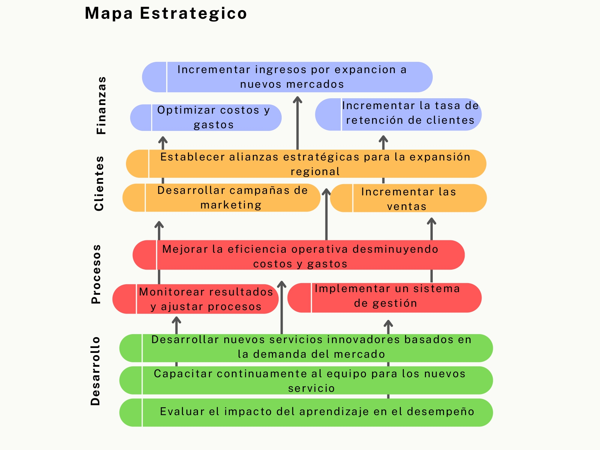

Para facilitar las discusiones, reuniones con relación a la toma de decisiones de la Junta Directiva y comités estratégicos, hemos diseñado el siguiente Plan estratégico para la compañía, con su mapa el cual proporciona una visualización clara de los objetivos estratégicos organizados por cada perspectiva para la organización Potencial Humano del Norte.
De acuerdo con la ejecución del plan estratégico y el scorecard para Potencial Humano del Norte S.A.S. encontramos las siguientes implicaciones organizacionales las cuales requieren una alineación clara entre los objetivos estratégicos y las operaciones diarias de la organización, asegurando que todos los miembros estén comprometidos y alineados con la visión y misión de la empresa.
Innovación: La introducción de nuevos servicios, especialmente aquellos alineados con la demanda del mercado, requiere una estructura organizacional que apoye la innovación. Esto incluye la creación de equipos dedicados al desarrollo de servicios y a la investigación de tendencias del mercado.
Optimización de Procesos: La mejora de la eficiencia operativa requiere la revisión y optimización de procesos internos, como la gestión de inventarios, control de costos y la implementación de tecnologías que aumenten la productividad.
Estrategias de Marketing y Ventas: La expansión a nuevos sectores del mercado requerirá una estructura organizacional capaz de ejecutar campañas de marketing específicas y de gestionar alianzas estratégicas.
Desarrollo Profesional: Es fundamental establecer un plan de desarrollo profesional para el personal, alineado con los objetivos estratégicos de la empresa. Esto incluye formación continua, evaluación de desempeño y oportunidades de crecimiento dentro de la organización.
La ejecución del plan estratégico y del scorecard para Potencial Humano del Norte implica un conjunto de consideraciones culturales que pueden influir significativamente en su éxito. Fomentar una cultura que valore la alineación con la misión, la diversidad, la innovación, la colaboración y la ética permitirá a la organización no solo alcanzar sus objetivos, sino también posicionarse como un referente en el ámbito de la educación y el desarrollo humano en la región Caribe de Colombia.
La cultura organizacional debe estar alineada con la misión de ofrecer servicios integrales de educación y desarrollo humano. Para ello, es fundamental que todos los empleados comprendan y compartan estos valores, lo cual influye en la motivación y el compromiso del equipo. La misión y visión de Potencial Humano del Norte deberían ser promovidas continuamente para integrar estos conceptos en la cultura diaria de la empresa.
La cultura de calidad y mejora continua debe estar en el centro de la organización. Los empleados deben ser incentivados a proponer ideas innovadoras para mejorar los servicios y procesos. La certificación de calidad CELAC 6072 resalta la importancia de establecer estándares, pero la cultura organizacional debe respaldar este enfoque mediante la promoción de un ambiente en el que se valore la creatividad y la proactividad.
La implementación de nuevos servicios y la mejora de la eficiencia operativa requieren un enfoque colaborativo. La cultura debe fomentar el trabajo en equipo, donde las diferentes disciplinas se integren para cumplir con los objetivos estratégicos.
La capacidad de adaptarse a un entorno en constante cambio es crucial. La cultura organizacional debe fomentar la resiliencia, donde los empleados estén preparados para enfrentar desafíos y cambios en el mercado. Esto implica estar abiertos a nuevas tecnologías, métodos de enseñanza y formas de servicio, lo que a su vez contribuye a la sostenibilidad y crecimiento de la institución.